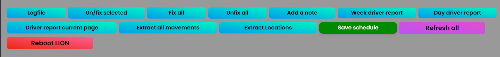
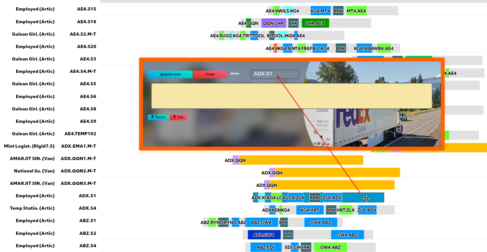
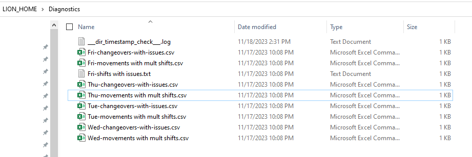
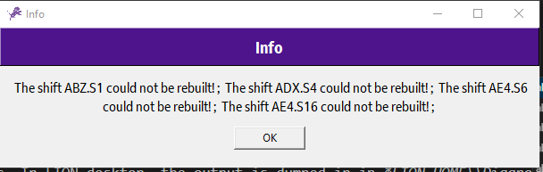
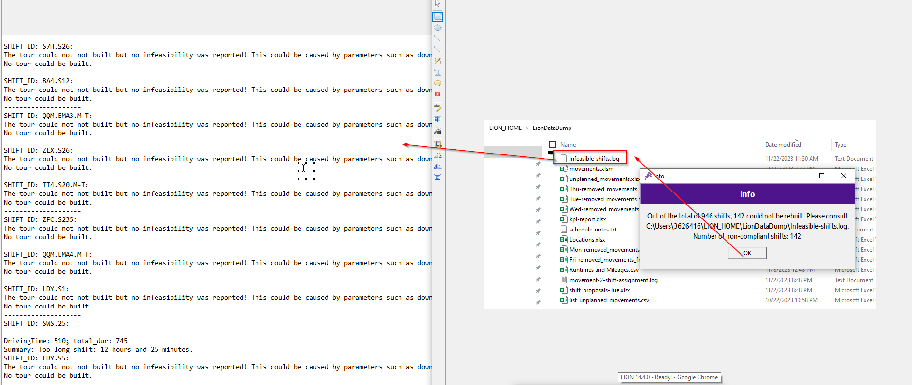
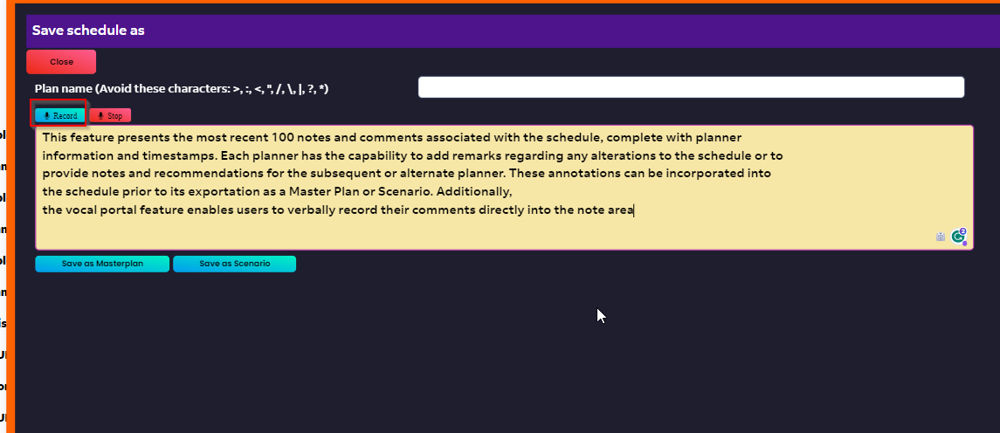

Buttons¶
{kind=link}
Logfile:¶
Open status.log in browser to review potential unreported errors. If a user sees LION is not doing what it should be doing,without any notification, this is the page to review to see things has gone wrong under the hood
Un/fix selected¶
To fix or unfix a subset of tours, use can hold CTRL key and select shifts to be fixed or unfixed. Once done with selection process, user can press this button and LION will fix the tours whicha re not fixed, and unfix, fixed ones.
Fix all¶
As name suggests, this button will fix all shifts soecified using the filter portal. For example, if user selects all Van shifts and load_data, by pressing this button, all selected van tours will be fixed. If user loads all Park-house (ZFC) tours and press this button, all park-house tours will be fixed.
UnFix all¶
Similar to the previous but reverse
Add a note¶
Designed to add a note to a shift:
{kind=link}
Scroll down to the drag and drop chart and Right-click on a
shift and select add a note. By clicking on the shift, shift name will appear in the designated form. Type in, or speak
in, your notes in the dedicated area and press Update note button. The note will be appended to the default
remarks of the shift:
{kind=link}
Extract all movements¶
Designed to extract all movements in the loaded schedule throughout the week. In the output movements.xlsm file, fixed movements will
be will have asterisk on the weekday it runs. In desktop version of LION, the output is dumped in
LION_HOME\LionDataDump directory.
{kind=link}
Extract Locations¶
Designed to extract all locations details including number of fixed/unfixed employed and subcontractor drivers count per location based on the loaded schedule. In desktop version of LION, the output is dumped in LION_HOME\LionDataDump directory.
Save schedule¶
Temporarily stores the schedule to prevent data loss. It’s important to understand that this action won’t alter the existing master plan. However, be aware that if you’re editing a scenario, the scenario’s schedule will be replaced.
Reboot LION¶
Reboots the application after saving changes made by user. This can be helpful to prevent latest changes loss which can be caused if the app is rebooted through shortcut in taskbar or desktop. Please note that in server version of the app, this button is the only way to reboot the app if needed!
{kind=link}
Run diagnostics¶
It isn recommended to execute this functionality as a health check of the schedule. It reports potential issues such as wrong changeovers, shifts with issues, etc. In LION desktop, the output is dumped in in LION_HOME\Diagnostic folder.
{kind=link}
Repair shifts¶
Tries to re-build tours available on the current page. Please note that this is not an optimization module. It tried to rebuild tours one by one to check whether they are 100% compliant or not. To evaluate a set of shifts, user can collect them in the basket and execute this module for compiance check. NOTE that this functionality does not modify or delete any movement or shift.
{kind=link}
Identify non-compliant shifts¶
It conducts a similar analysis to Repair shifts but on the entire schedule instead of the current page. A log file will be generated providing a bit more details per non-compliant shift. NOTE that this functionality does not modify or delete any movement or shift. In LION desktop, the output is dumped in in LION_HOME\LionDataDump folder.
{kind=link}
Propose shifts¶
If there is a movements in Movement dump area or Movement bucket, this functionality tries to identify shifts which can obsorb the movement while stay compliant. If multiple movements are provided, the check will be executed per movement. If no filtering is provided by the user, e.g, filter on certain location or vehicle type, etc., the entire schedule will be evaluated per movement.
In the example below, I have an Express loaded movement, NCL.AE4.0745 in the dump area whose time and locations match the empty movement in the shift
AE4.TEMP102. I executed Propose Shift and expected that this movement to be obsorbed by the mentioned shift. The executionw as successful
and I received a notification about the number of movements with proposal. The output xlsx file, namely, shift_proposals-Mon.xlsx was dumped
in LION_HOME\LionDataDump directory (in LION Desktop).
{kind=link}
Show docs¶
This feature presents the most recent 100 notes and comments associated with the schedule, complete with planner information and timestamps. Each planner has the capability to add remarks regarding any alterations to the schedule or to provide notes and recommendations for the subsequent or alternate planner. These annotations can be incorporated into the schedule prior to its exportation as a Master Plan or Scenario. Additionally, the vocal portal feature enables users to verbally record their comments directly into the note area
{kind=link}
Export schedule¶
Exports current schedule and makes it public for other users to view. The exported schedule can be accessed by other users. User gets a notification to decide whether to make the schedule encrypted or not. If encrypted, the schedule can only be viewed by the users who have the password.
Import shared sch.¶
The latest schedule saved by master planner will be imported. Please note that this action will overwrite the current schedule stored in local repository. The module will ignore encrypted schedules.
Backup¶
Creates a backup of the databases in stores them in LION_BACKUP directory, located on OneDrive directory of user.
KPI Report¶
This function generates a Microsoft Excel file named kpi-report.xlsx. The file is automatically saved in the LION_HOME\LionDataDump
directory on the Desktop version of LION. The Excel file contains a comprehensive set of Key Performance Indicators (KPIs). These KPIs are presented
in an overall schedule format, and are further broken down by vehicle type and contractor type, distinguishing between Employed and
Subcontractor categories
{kind=link}
{kind=link}
Del selected C/O¶
Dealing with Unintended Changeovers in Scheduling. Occasionally, unintended changeovers may occur in the schedule. These can create excess noise and instability, disrupting the planning and scheduling process. Identifying such changeovers is crucial to maintain a coherent schedule.
You can spot these changeovers by:
Extracting all movements (see
Extract all movementssection).Running diagnostics (refer to
Run diagnostics).
To address these issues, follow these steps:
Access the Search portal:
{kind=link}
Select the problematic changeover:
{kind=link}
Note: It’s not necessary to Load data.
Once the changeover is selected, click on the Del selected C/O button to delete it.
Important: This action will only remove the linkage between movements. No individual movement or shift will be deleted. This process helps in achieving a cleaner and more stable schedule.
Update vehicles¶
1. Update the Vehicle List: Open the vehicles.xlsx file. Add a new row with a unique vehicle name and a corresponding shortname. Ensure each vehicle has a distinct name to avoid conflicts.
2. Save Your Changes: After entering the new vehicle details, save and close the vehicles.xlsx file. This step is crucial for the changes to take effect.
3. Locate the File Correctly: For the desktop version of LION, ensure that the vehicles.xlsx file is located in the following directory: LION_SHARED_DIR\LION_Files. This placement is essential for LION to access and update the vehicle list correctly.
4. Add the Vehicle in LION: Now, click on the designated button to add the new vehicle to LION. This action will integrate the updated vehicle list from the vehicles.xlsx file into the LION system.
Update traffic types¶
1. Update the traffic type List: Open the traffic_types.xlsx file. Add a new row with a unique traffic_type. Ensure each traffic_type has a distinct name to avoid conflicts.
2. Save Your Changes: After entering the new traffic_type details, save and close the traffic_types.xlsx file. This step is crucial for the changes to take effect.
3. Locate the File Correctly: For the desktop version of LION, ensure that the traffic_types.xlsx file is located in the following directory: LION_SHARED_DIR\LION_Files. This placement is essential for LION to access and update the traffic_type list correctly.
4. Add the traffic_type in LION: Now, click on the designated button to add the new traffic_type to LION. This action will integrate the updated traffic_type list from the traffic_types.xlsx file into the LION system.